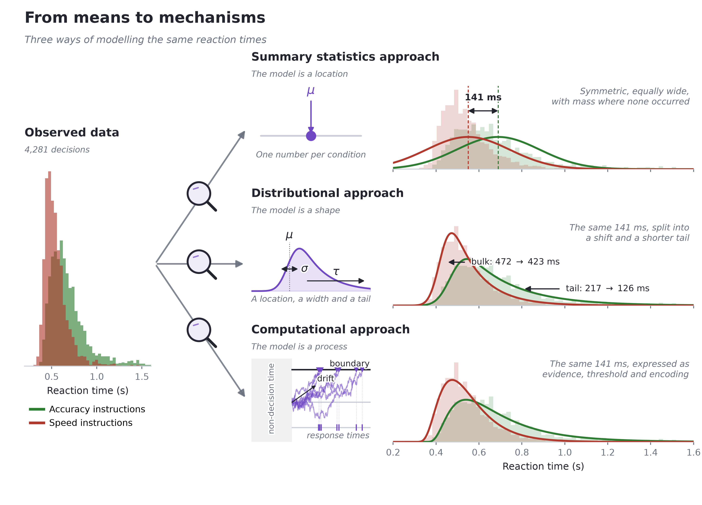
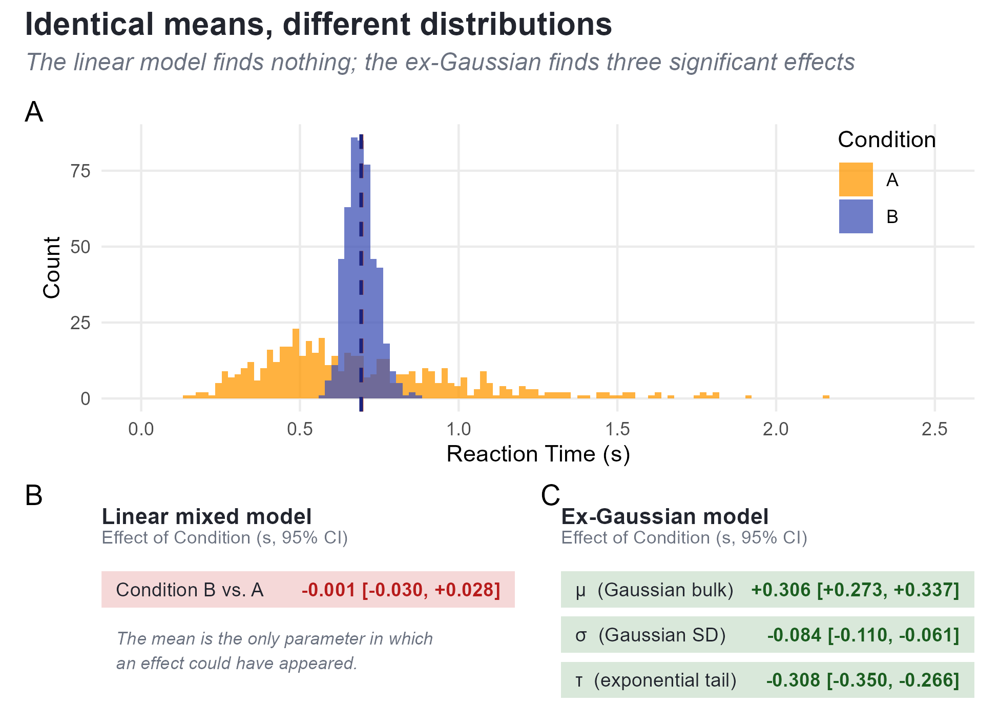
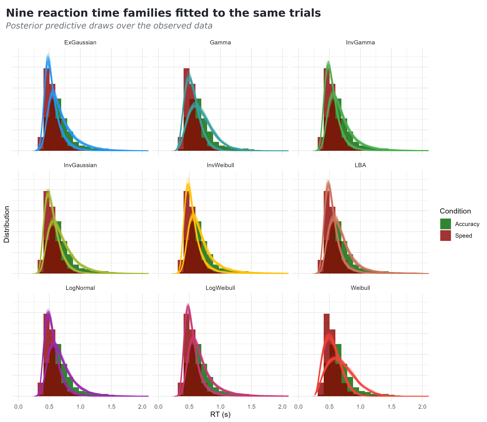
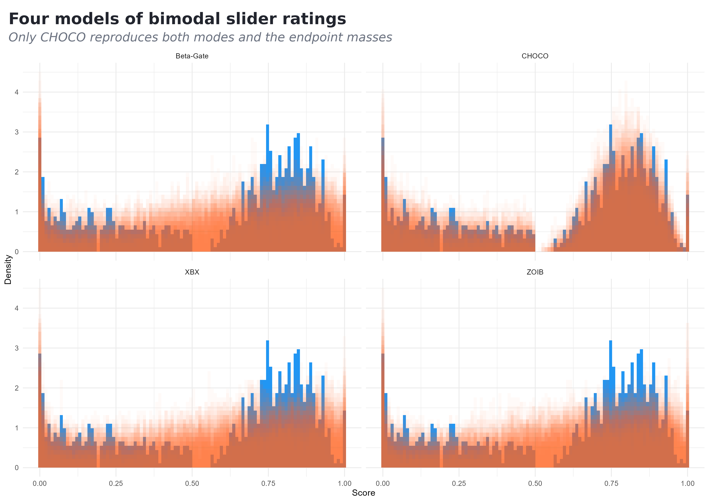

cogmod: A Unified Framework for Bayesian Cognitive Models of Reaction Times, Choices and Subjective Ratings in R
Dominique Makowski
School of Psychology, University of Sussex
Sussex Centre for Consciousness Science, University of Sussex
D.Makowski@sussex.ac.uk
Author Note
Dominique Makowski  https://orcid.org/0000-0001-5375-9967
https://orcid.org/0000-0001-5375-9967
All the code, data and models presented in this paper are openly available at https://github.com/DominiqueMakowski/cogmod. The authors have no conflicts of interest to disclose.
Author roles were classified using the Contributor Role Taxonomy (CRediT; credit.niso.org) as follows: Dominique Makowski: conceptualization, software, formal analysis, visualization, writing – original draft, and writing – review & editing
Correspondence concerning this article should be addressed to Dominique Makowski, School of Psychology, University of Sussex, Brighton BN1 9RH, UK, Email: D.Makowski@sussex.ac.uk
Abstract
Cognitive models extract substantially more information from behavioural data than the means and mean differences that dominate published analyses. This holds both for descriptive distributional families such as the ex-Gaussian and for generative process models such as the Drift Diffusion Model. Adoption nonetheless remains limited, and one reason is practical: the software landscape is fragmented, with each model family living in its own package, with its own syntax, its own parameterization and its own post-processing tools. Models are therefore rarely compared across families, and cognitive modelling sits apart from the regression workflow that psychologists already know. We introduce cogmod, an R package that implements a broad set of cognitive models as brms custom families. Models are specified with ordinary brms formula syntax, any parameter (drift rate, boundary separation, non-decision time, confidence, precision) can be predicted by covariates and given random effects, and the fitted object is a standard brmsfit supporting the usual priors, diagnostics, posterior predictive checks, leave-one-out cross-validation and easystats post-processing. Four worked examples use simulated data and a published lexical decision dataset: recovering the components of an experimental effect that a linear model collapses into one number, comparing ten reaction time families in a single call, modelling bimodal slider-scale ratings with the Choice-Confidence (CHOCO) model, and quantifying the reliability of model parameters as individual-level scores. cogmod is openly available at https://github.com/DominiqueMakowski/cogmod.
Keywords: cognitive modelling, Bayesian statistics, reaction times, evidence accumulation, subjective ratings, R
cogmod: A Unified Framework for Bayesian Cognitive Models of Reaction Times, Choices and Subjective Ratings in R
Introduction
Cognitive tasks produce rich data. A single participant in a two-choice task generates hundreds of trials, each carrying a response, a latency, and often a confidence rating. Most published analyses reduce all of this to a handful of condition means and then test whether those means differ. Summarising the data this way is itself a modelling decision, and a costly one, since much of what distinguishes cognitive data from other kinds of data is discarded along the way.
Broadly, three approaches to such data can be distinguished. The summary statistics approach treats observations as Normally distributed and summarises them by their mean, which is what t-tests, ANOVAs and linear regressions do. The distributional approach selects a likelihood that matches the shape of the outcome, such as an ex-Gaussian or shifted LogNormal for reaction times [RTs; Matzke and Wagenmakers (2009); Balota and Yap (2011)] or an ordered Beta for bounded ratings (Kubinec, 2023), so that skew, boundedness and dispersion are described rather than assumed away. The computational approach goes further and specifies a likelihood derived from an account of the process that generated the data. In evidence accumulation models, response times are the first-passage times of a noisy accumulation towards a decision boundary, so the parameters refer to distinct components of the decision: the quality of the evidence, the amount of it required before committing, and the time spent encoding the stimulus and executing the response (Brown & Heathcote, 2008; Ratcliff & McKoon, 2008).
The labels are a convenience rather than a partition. All three approaches are generative in the statistical sense, since each defines a distribution from which data could be simulated, and cogmod ships a random generation function for every family it implements. What separates them is how far back the account starts. The first two generate observations from a shape, badly or well chosen, and the Gaussian model is best understood as the second approach with the shape left unexamined. The third generates them from a mechanism, and only there do the parameters amount to claims about psychology. Figure 1 shows what each makes of the same reaction times.
Figure 1
The three approaches applied to the same trials: correct responses from three participants in the lexical decision data of Wagenmakers et al. (2008), used again in Examples 1 and 2. The observed reaction times are on the left; each row then shows what one model is made of and the distribution that follows from it, drawn back over the same data. The 141 ms difference between instruction conditions is first a single number, then a shift plus a shorter tail, then a statement about how evidence was accumulated. The ex-Gaussian curves use the posterior means reported in Example 1; the shifted Wald curves are maximum-likelihood fits, since the text does not report its non-decision time.

The case for moving beyond the first approach is by now well established. Distributional analyses recover effects that mean comparisons miss and disambiguate effects that mean comparisons conflate (Balota & Yap, 2011; De Boeck & Jeon, 2019). Process models turn an experimental effect into a statement about which component of processing changed, which is what most cognitive-theoretical claims are actually about (Evans & Wagenmakers, 2020; Ratcliff et al., 2016). In individual-differences and clinical work, model-based parameters are also substantially more reliable than the difference scores traditionally computed from the same data, making them one of the more promising responses to the “reliability paradox” (Haines et al., 2020; Hedge et al., 2018).
Yet uptake remains modest, and the reason is at least partly practical. The software available to fit these models is fragmented along model family lines. Diffusion models are fitted in HDDM or its successor HSSM in Python (Fengler et al., 2026; Wiecki et al., 2013), in fast-dm (Voss & Voss, 2007), in DMAT (Vandekerckhove & Tuerlinckx, 2008), or in PyDDM (Shinn et al., 2020); racing accumulator models in DMC and EMC2 in R (Heathcote et al., 2019; Stevenson et al., 2026), in rtdists, or in SequentialSamplingModels.jl in Julia (Fisher & Makowski, 2024); ordinal and bounded-scale models in yet another set of packages. Each toolbox has its own syntax for specifying which parameters depend on which conditions, its own parameterizations and its own output objects. This fragmentation has three practical consequences.
First, comparing families is expensive and therefore rare. Deciding between an ex-Gaussian and a shifted LogNormal, or asking whether a Weibull would do just as well as either, requires re-fitting in different packages with incommensurable interfaces and then reconciling model comparison indices that were not computed the same way. Choices of likelihood are usually inherited rather than tested.
Second, cognitive models are cut off from the regression workflow that psychologists already use. Adding a covariate to a drift rate, a random intercept per participant, or a smooth term for trial number should be as easy as adding it to any other model, and in specialized toolboxes it usually is not.
Third, post-processing has to be rebuilt each time. Extracting marginal effects, contrasts, posterior predictive distributions, reliability indices or automated reports means writing bespoke code against each package’s object rather than reusing a shared ecosystem.
cogmod takes a different route. Rather than building a new modelling framework, it implements cognitive models inside an existing and widely used one. Every model is a brms custom family (Bürkner, 2017), and therefore a Stan model (Carpenter et al., 2017) specified with ordinary brms formula syntax. Everything that brms users already know then applies unchanged to a Drift Diffusion Model or a Choice-Confidence model: distributional regression on every parameter, multilevel structure, priors, convergence diagnostics, posterior predictive checks, leave-one-out cross-validation (Vehtari et al., 2017), and the easystats post-processing ecosystem (Lüdecke et al., 2019, 2021; Makowski et al., 2019).
The remainder of this paper describes the design and implementation of the package, the models it currently provides, and four worked examples chosen to illustrate what a unified interface makes possible: recovering the components of an effect that a linear model collapses into a single number, comparing ten RT families in one call, modelling bimodal slider ratings, and assessing whether model parameters are precise enough to be used as individual-level scores.
Design and Implementation
Models as brms custom families
brms translates an R formula into Stan code. Its custom family mechanism allows users to supply their own likelihood: a customfamily object declaring the distributional parameters and their link functions, plus a stanvars object injecting the Stan functions that evaluate the log-density. cogmod packages both for each model, and additionally provides the post-processing methods (log_lik_*, posterior_predict_* and posterior_epred_*) that brms requires in order to compute information criteria and generate predictions.
In practice, using a cogmod model requires two arguments beyond a standard brm() call: family and stanvars.
library(cogmod)
library(brms)
f <- bf(
RT ~ Condition +
(Condition | Participant),
sigma ~ Condition +
(Condition | Participant),
tau ~ Condition +
(Condition | Participant),
minrt = min(df$RT),
family = rt_lognormal()
)
m <- brm(
f,
data = df,
stanvars = rt_lognormal_stanvars(),
backend = "cmdstanr"
)Everything else is brms. The formula syntax is the usual one, so any parameter of the model can be predicted by covariates, given random effects, splines, autocorrelation structures or monotonic effects. The fitted object is a plain brmsfit, so summary(), pp_check(), loo(), emmeans, bayesplot and the easystats functions work without adaptation. cogmod adds likelihoods and inherits the rest.
Two properties of this arrangement are worth spelling out, since they are what separates cogmod from a collection of independent model fitting routines.
Every parameter is a regression target. In most specialized software, the analyst declares which parameters are “free” and which are fixed, and condition effects enter through a design matrix specific to that toolbox. Here, each distributional parameter has its own formula. Regressing Condition on the boundary separation rather than on the drift rate is a one-line change, as is giving each participant their own non-decision time. This matters beyond convenience: it makes the location-scale style of modelling advocated by Williams et al. (2021), in which the dispersion of a participant’s RTs is itself a person-specific quantity with its own predictors, the default rather than a special case.
Parameterizations are harmonized. Models are only comparable if their parameters mean comparable things. cogmod therefore adopts consistent conventions across families. Non-decision time is always called tau and always expressed as a proportion of the fastest observed response (ndt = tau * minrt, with a logit link), which bounds it in [0, 1], guarantees that the shift can never exceed the fastest observed RT, and makes it comparable across families and datasets. Scale parameters use a softplus link rather than a log link, which behaves better near zero. Location parameters are named mu, dispersion sigma, and boundary separation bs wherever the concepts apply. Where a competing convention exists in the wider literature, the psychologically standard one is used: cogmod’s rt_exgaussian() family parameterizes mu and sigma as the mean and SD of the Gaussian component alone and tau as the mean of the exponential tail, which is the classical parameterization familiar to experimental psychologists (Matzke & Wagenmakers, 2009), and differs from brms’s built-in exgaussian() family, whose mu indexes the mean of the entire distribution. The difference matters: a change in the Gaussian location and an opposite change in the tail can cancel out at the level of the overall mean, so the two parameterizations can support different conclusions about the same data.
Implemented models
Figure 2 shows the families currently available, grouped by the kind of response they are written for. They span the descriptive-to-generative continuum described in the introduction rather than committing to one end of it. This is deliberate: whether a flexible descriptive likelihood or a more constrained process model is the better choice is an empirical and theoretical question, and examining it requires both options under one interface. The full set of distributional parameters for each family, together with their link functions and defaults, is documented on the package website.
Figure 2
Response formats covered by cogmod and the main families available for each. Five further descriptive RT families are also implemented (rt_weibull(), rt_logweibull(), rt_invweibull(), rt_gamma() and rt_invgamma()) and are compared against the others in Example 2. Every family comes with a _stanvars() function supplying the corresponding Stan code, and with d*() and r*() functions for density evaluation and simulation.

Each family is accompanied by density (d*()) and random generation (r*()) functions, which are used for prior predictive simulation and for the parameter recovery checks distributed with the package. Two of the families are, to our knowledge, new to this literature or newly available in a regression framework. The Choice-Confidence (CHOCO) model treats a bounded rating as the combination of a discrete choice between the two halves of the scale and a continuous, Beta-distributed evaluation within the chosen half, with an explicit mechanism for extreme responding (see Example 3). The Beta-Gate family is a reparameterization of the ordered Beta model (Kubinec, 2023) in which the probability and the direction of extreme responses are separated into two interpretable parameters (pex and bex) rather than being expressed as cutpoints. betadiscrete() implements the discrete Beta distribution of Sciandra et al. (2024) for Likert-type data, which fixes the category thresholds and lets a two-parameter Beta govern the response proportions. It is the mirror image of the cumulative ordinal model, and considerably more parsimonious when the number of categories is large.
Relation to existing software
cogmod is not intended to replace the specialized evidence accumulation toolboxes, and the division of labour is worth stating. EMC2 (Stevenson et al., 2026) and HSSM (Fengler et al., 2026) provide sampling algorithms tailored to the geometry of accumulator models, hierarchical structures designed for them and, in the case of HSSM, likelihood approximation networks that make otherwise intractable model variants estimable. For a study whose scientific question is the architecture of the decision process, those are the appropriate tools, and they will generally be faster and more capable at the far end of model complexity.
cogmod targets a different and, we would argue, more common situation: a researcher with an experimental dataset, a regression-shaped question, and a need for a likelihood that respects the data. For that user the relevant comparison is between a linear model and something better, rather than between one accumulator toolbox and another. The value of the brms route is that moving from brm(RT ~ Condition) to a shifted LogNormal, then to a Wald, then to a full DDM involves changing two arguments rather than changing software, and that at every step the analysis remains a regression, with random effects, contrasts and marginal means available in the usual way. The trade-off is computational: general-purpose HMC on custom Stan code is slower than a purpose-built sampler, and we quantify that cost in the examples below rather than glossing over it.
Example 1: Recovering What the Mean Hides
An effect that is not in the mean
The clearest way to see what a Gaussian model discards is to construct data in which everything of interest lies outside the mean. Figure 3 shows such a case: a within-subject experiment with 20 participants performing 25 trials in each of two conditions (500 trials per condition), bundled with the package as badlm. Condition A has responses beginning almost immediately, with a long tail extending past two seconds; condition B has no responses at all before roughly 570 ms, followed by a tight and nearly symmetric bump. These are two very different behaviours by any reasonable standard, differing in where the distribution starts, how wide it is, and how heavy its tail is.
A linear mixed model with a random intercept per participant, the specification a careful analyst would reach for and the one that correctly matches how the data were generated, finds nothing: b = -1.2 ms, t(996) = -0.08, p = .94. This is a faithful answer to the question the test was asked, since the two distributions were constructed to have identical means (694 vs. 693 ms). Accounting for the fact that participants differ in overall speed is necessary and correct, but it buys nothing here: the problem is not which mean the model estimates, but that a mean is all it estimates. Panel B shows what the fitted model believes, two almost perfectly superimposed Normal curves, symmetric, with a common variance, and assigning non-negligible probability to negative response times.
Figure 3
Two simulated conditions with identical means (20 participants, 25 trials per condition each). (A) Observed distributions (dashed lines: condition means). (B) The two Normal distributions implied by the fitted linear mixed model for a participant at the population average, superimposed on the data. The model’s two curves are nearly indistinguishable, are symmetric where the data are skewed, share a variance the data do not, and place mass below zero.

Transforming the data does not solve this either. Log- or inverse-transforming RTs before fitting a linear model changes the quantity being tested: the model now compares means of transformed values, which do not back-transform to mean RTs and can reverse, create or mask effects relative to the untransformed scale (Schramm & Rouder, 2019; see Liddell & Kruschke, 2018 for the analogous argument about ordinal data). It also leaves the underlying problem untouched, since a difference in shift, in spread or in tail weight is still funnelled through a single location parameter.
Decomposing a real effect
The same point can be made with real data, and with an effect that is detectable in the mean. We use the lexical decision data of Wagenmakers et al. (2008) (Experiment 1), which is bundled with the package as wagenmakers2008. Participants classified letter strings as words or non-words under instructions emphasising either speed or accuracy. Following the original authors, trials faster than 200 ms or slower than 2 s were excluded. For this illustration we use correct responses from three participants (n = 4{,}281 trials); to keep the example minimal we pool them without random effects, and return to the multilevel case in Example 4.
The Gaussian model gives the familiar answer: responses were 141 ms faster under speed instructions (95% CI [129, 153]). The ex-Gaussian model, which lets Condition predict the location, the dispersion and the tail separately, says considerably more:
f <- bf(
RT ~ Condition,
sigma ~ Condition,
tau ~ Condition,
family = rt_exgaussian()
)
m_exgauss <- brm(
f,
data = df,
stanvars = rt_exgaussian_stanvars(),
chains = 4, iter = 500,
backend = "cmdstanr"
)On the response scale, the Gaussian component moves from 472 ms to 423 ms, its SD from 52 ms to 40 ms, and the exponential tail from 217 ms to 126 ms; all three intervals exclude zero. The three parameters recover the Gaussian model’s estimate exactly (472 + 217 = 689 ms under accuracy instructions, 423 + 126 = 549 ms under speed) but they attribute it: 65% of the 141 ms speed-up is a shortening of the tail, and only 35% a shift in the bulk of the distribution. On this account a speed instruction does not simply move every response earlier; it mostly removes the slow ones.
The shifted Wald model, derived from a process rather than chosen for its shape, re-expresses the same data in mechanistic terms. Its mu is a drift rate, bs a boundary separation and tau a non-decision time, and the natural hypothesis for a speed-accuracy manipulation is that instructions move the threshold:
f <- bf(
RT ~ Condition,
bs ~ Condition,
tau ~ Condition,
minrt = min(df$RT),
family = rt_invgaussian()
)Here the model reports a substantial increase in drift rate under speed instructions (2.93 to 4.16) and essentially no change in boundary separation (1.15 to 1.16, 95% CI on the linear predictor [-0.12, 0.15]), the opposite of the textbook speed-accuracy account. The reason is instructive, and it is a limitation of the model rather than a discovery about the data: a single-boundary Wald sees only correct responses, and with RT data alone drift rate and boundary separation are only weakly identified, trading off against each other (Matzke & Wagenmakers, 2009). To separate them, the model needs to see the errors as well. Fitting a full DDM to the choices and the RTs of one participant (n = 1{,}917 trials) recovers the canonical result: boundary separation drops from 1.45 to 1.21 under speed instructions (95% CI on the linear predictor [-0.40, -0.23], pd = 100\%), while the drift rate is essentially unchanged (pd = 94\%).
f <- bf(
RT | dec(Error) ~ Condition,
bs ~ Condition,
bias ~ 1,
tau ~ 1,
minrt = min(df$RT),
sigmadrift = 0,
sigmabias = 0,
sigmatau = 0,
family = ddm()
)
m_ddm <- brm(
f,
data = df,
stanvars = ddm_stanvars(),
chains = 4, iter = 500,
backend = "cmdstanr"
)The sequence matters more than any single model in it. Each step from the Gaussian to the ex-Gaussian, the Wald and the DDM extracts more from the same trials, and each is a change of two arguments rather than a change of software. The last step also shows why having the whole sequence to hand is useful: the Wald’s answer is only recognisable as misleading because the DDM can be fitted next to it.
Example 2: Comparing Model Families
Ten families, one call
Because all cogmod models are brmsfit objects fitted to the same data with the same likelihood-based criterion, comparing them is a single call to loo::loo_compare() (Vehtari et al., 2017). We fitted ten families to the RT data described above (the Gaussian baseline, six descriptive families, the shifted Wald and a single-accumulator LBA), each with Condition predicting all of its parameters. Table 1 reports the comparison, together with the median sampling time per chain.
Table 1
Leave-one-out cross-validation for ten RT families fitted to the same data (n = 4{,}281). ENP is the effective number of parameters; Difference is the difference in expected log predictive density relative to the best model, with its standard error. Time is the median sampling duration per chain (4 chains, 500 iterations, on a consumer laptop).
| Model | LOOIC | ENP | ELPD | Difference | SE | Time (s) |
|---|---|---|---|---|---|---|
| LBA | −4845.1 | 7.29 | 2422.6 | 0.0 | 0.0 | 572.0 |
| Inverse Weibull | −4840.8 | 4.72 | 2420.4 | −2.2 | 5.9 | 98.3 |
| LogWeibull | −4840.4 | 5.03 | 2420.2 | −2.4 | 6.0 | 79.7 |
| Inverse Gamma | −4831.7 | 8.31 | 2415.9 | −6.7 | 6.2 | 66.5 |
| ExGaussian | −4793.3 | 6.41 | 2396.6 | −25.9 | 9.5 | 19.7 |
| Shifted LogNormal | −4763.0 | 8.80 | 2381.5 | −41.1 | 11.1 | 22.6 |
| Shifted Wald | −4728.7 | 10.84 | 2364.4 | −58.2 | 15.1 | 52.0 |
| Gamma | −4393.2 | 7.53 | 2196.6 | −225.9 | 24.8 | 39.4 |
| Weibull | −3680.4 | 9.33 | 1840.2 | −582.4 | 39.0 | 20.2 |
| Gaussian | −1904.2 | 7.82 | 952.1 | −1470.5 | 73.3 | 0.1 |
Three things stand out, none of which would have been convenient to check without a common interface.
The Gaussian model is not a mild approximation. It is worse than the next-worst family by 888 units of expected log predictive density, and worse than the best by 1,470 (SE 73). Whatever its merits as a description of condition means, as a model of these data it is inadequate, and the “safe default” framing under which linear models are usually adopted does not survive a likelihood-based comparison.
The unfamiliar families do surprisingly well. The inverse Weibull, the log-Weibull (Gumbel) and the inverse Gamma, none of which have any appreciable presence in the RT literature, are statistically indistinguishable from the best-fitting model and clearly better than the ex-Gaussian, the shifted LogNormal and the shifted Wald, which between them account for most published distributional analyses of RTs. The inverse Weibull achieves this with the fewest effective parameters in the set (ENP 4.72). We do not claim that these families should displace the established ones: they are purely descriptive, their parameters have no established cognitive interpretation, and this is a single dataset. What matters is that the question is now cheap to ask, and that a literature which has settled on two or three families has done so without much comparative evidence.
Fit and cost are not aligned. The LBA is nominally the best model and takes roughly 30 times longer to sample than the ex-Gaussian, for a gain that is within noise of families that are five times faster. Making that trade-off visible is part of what a unified framework is for; in Table 1 it is a column rather than an inference the reader has to assemble across papers.
Two caveats apply to this table. These models pool three participants without random effects, so families that happen to absorb between-participant heterogeneity more gracefully are advantaged; a hierarchical version of this comparison would be more informative and is straightforward to specify, though considerably more expensive to fit. And LOO measures predictive fit, not theoretical adequacy: the shifted Wald sits below three descriptive families here while being the only model in that group whose parameters refer to anything.
Posterior predictive checks
Model comparison indices summarise fit into a number; posterior predictive checks show where a model fails. Because cogmod supplies posterior_predict_* methods for every family, these are generated in the usual way, and modelbased::estimate_prediction() returns them in a form suited to plotting (Makowski et al., 2020).
pred <- m_exgauss |>
estimate_prediction(
keep_iterations = 50,
iterations = 50
) |>
reshape_iterations()Figure 4 overlays the predictive distributions of nine families on the observed data, separately for the two conditions. The families that fared poorly in Table 1 fail in visible and specific ways, with the Weibull and Gamma misplacing the leading edge and under-producing the tail, whereas the top group is difficult to separate by eye, consistent with their overlapping intervals in the table.
Figure 4
Posterior predictive checks for nine RT families. Histograms show the observed data (green: accuracy instructions; red: speed instructions); lines show 50 posterior predictive draws per condition.

Example 3: Beyond Reaction Times, Subjective Ratings
Cognitive modelling is usually discussed in terms of RTs, but the same argument applies to any outcome whose distribution carries information. Analog (slider) scales are a case in point: responses are bounded, frequently pile up at the endpoints, and are very often bimodal, because participants first decide which side of the scale they are on and only then decide how far along it to go. A Beta model, a zero-one-inflated Beta (ZOIB) or an ordered Beta cannot represent that shape, since all of them are unimodal by construction; fitting them to bimodal ratings produces a distribution peaked in the middle, where the data have their trough.
The Choice-Confidence (CHOCO) model implements the two-stage account directly. A parameter mu gives the probability of responding on the right half of the scale; conditional on that choice, the response follows a rescaled (and, for the left half, mirrored) Beta-Gate distribution with its own mean (confright, confleft, interpretable as confidence) and precision (precright, precleft, interpretable as consistency). Extreme responses at 0 and 1 arise from a “gate” mechanism, with pex controlling the overall tendency towards extreme responding and bex its direction. The model can therefore separate a change in which option is chosen from a change in how confidently it is endorsed, two things that a mean rating necessarily confounds.
f <- bf(
score ~ x,
confright ~ x, confleft ~ x,
precright ~ x, precleft ~ x,
pex ~ x, bex ~ x,
pmid = 0,
family = choco()
)
m_choco <- brm(
f,
data = df,
stanvars = choco_stanvars(),
chains = 4, iter = 500,
backend = "cmdstanr"
)We simulated 900 ratings in which a covariate x shifted both the probability of responding on the right and the confidence on each side, and compared four models. CHOCO reached an ELPD of 385.3, against 79.9 for the Beta-Gate model, 79.9 for ZOIB and 72.5 for the extended-support Beta [XBX; Kosmidis and Zeileis (2024)], a difference of 305 units (SE 16.7) over the best competitor. Figure 5 shows why: the three unimodal models place their mass in the middle of the scale, precisely where the data are sparsest, while CHOCO reproduces both modes and the endpoint masses. Sampling took 17.6 s per chain for CHOCO, comparable to the Beta-Gate model (12.8 s) and an order of magnitude faster than XBX (203.1 s).
Figure 5
Posterior predictive checks for four models of bounded ratings. Blue: observed data; orange: posterior predictive draws. The three unimodal families place their mass where the data have a trough.

For Likert-type data, cogmod additionally provides the discrete Beta family (Sciandra et al., 2024), which occupies an interesting middle ground with respect to the cumulative ordinal model (Bürkner & Vuorre, 2019). Cumulative models estimate K - 1 thresholds on an arbitrary latent scale; this is flexible, but the thresholds are sample-dependent and not directly comparable across studies, which complicates measurement invariance and meta-analysis. The discrete Beta fixes the thresholds at evenly spaced points and lets a two-parameter Beta govern the proportions, requiring only two parameters regardless of the number of categories while still accommodating J- and U-shaped response distributions.
Example 4: Are Model Parameters Usable as Individual Scores?
The question
A significant group-level effect and a usable individual-level measure are different things, and a study designed to establish the first can be entirely blind to the second (Hedge et al., 2018). This matters directly for clinical and differential applications, where the point of a task is to produce a number that characterises a person.
To make the distinction concrete, we simulated a validation study: 30 participants, 80 trials in each of three conditions, RTs generated from a shifted LogNormal process. Two effects were built in deliberately. Condition B produces a small slowing that is nearly identical for everybody (between-participant SD of 0.01 on the log scale). Condition C has a population mean of exactly zero but enormous interindividual variability (SD of 0.30): some participants are dramatically slowed, others dramatically speeded.
Fitting and reading the model
The model mirrors the generative process, with random effects on every parameter of the family:
f <- bf(
RT ~ Condition +
(Condition | Participant),
sigma ~ Condition +
(Condition | Participant),
tau ~ Condition +
(Condition | Participant),
minrt = min(sim$RT),
family = rt_lognormal()
)The fixed effects reproduce the classic conclusion: a credible effect of condition B (b = 0.10, 95% CI [-0.00, 0.21], pd = 97\%) and nothing for condition C (b = -0.04, 95% CI [-0.23, 0.14], pd = 65\%). The random-effect SDs invert the picture entirely: 0.01 for the condition B slope and 0.27 for the condition C slope, more than twenty times larger. The effect that “worked” is the one on which participants do not differ.
Comparing this to the analysis one would normally run is instructive. Computing each participant’s mean RT difference by hand yields a between-participant SD of ~31 ms for B − A, even though the data were generated with essentially no true variability; a bootstrap shows why, with a per-participant standard error of ~25 ms. By estimating between-participant variability and trial-level noise jointly, the model assigns that spread to the residual term where it belongs and recovers the true SD. This is the model-based counterpart of the noise correction that reliability coefficients perform, applied participant by participant rather than to the group as a whole, and it is why model-based individual scores are generally more reliable than difference scores, particularly when participants contribute few, noisy or unbalanced numbers of trials (Haines et al., 2020; Rouder & Mehrvarz, 2024).
Quantifying it
Participant-level estimates are extracted with modelbased::estimate_grouplevel(), and their usability as individual scores can be summarised by the Variance-Over-Uncertainty Ratio (D-vour), implemented in performance::performance_dvour() (Lüdecke et al., 2021):
D_{\text{vour}} = \frac{\sigma_{\text{between}}^2}{\sigma_{\text{between}}^2 + \mu_{\text{within}}^2}
where \sigma_{\text{between}}^2 is the observed variability of the participant-level estimates and \mu_{\text{within}}^2 their mean squared uncertainty. It is bounded in [0, 1]; values near 1 indicate that participants differ far more than we are uncertain about where each of them stands. It is closely related to an intraclass correlation, with the important difference that the denominator uses the uncertainty of the estimates rather than the raw within-participant variance, so that, unlike an ICC, collecting more trials per participant increases it. It is also a normalized version of the signal-to-noise ratio advocated by Rouder and Mehrvarz (2024).
random <- estimate_grouplevel(m)
performance_dvour(random)Table 2 reports the result for every parameter of the model. The ordering is the expected one, but the magnitudes are informative: condition C reaches 0.92 while condition B collapses to 0.07, far below the 0.59 that the same index gives when computed on the raw empirical difference scores, which still contain the trial noise that the model has reassigned to the residual. Taken at face value, the empirical value would have suggested that condition B was borderline usable; the model says it carries essentially no individual-level information.
Table 2
D-vour (Variance-Over-Uncertainty Ratio) for every parameter of the mixed shifted LogNormal model. Values above 0.75 indicate strong group-level differences; values around 0.5 call for caution; values below 0.5 indicate that measurement noise dominates.
| Component | Parameter | D-vour |
|---|---|---|
mu |
Intercept | 0.94 |
mu |
ConditionC | 0.92 |
mu |
ConditionB | 0.07 |
sigma |
Intercept | 0.08 |
sigma |
ConditionC | 0.06 |
sigma |
ConditionB | 0.04 |
tau |
ConditionC | 0.12 |
tau |
Intercept | 0.06 |
tau |
ConditionB | 0.04 |
Two features of this table generalise beyond the simulation. First, the most reliable individual-level quantity the task produces is the mu intercept (0.94), simply how fast each participant is overall, which the experimental design treats as a nuisance to be subtracted away. This is the usual situation rather than an artefact. Second, because sigma and tau were given their own predictors and random effects, they receive their own reliability verdicts. Here they are correctly near zero, since every participant was simulated with the same dispersion and the same non-decision time, a useful negative control. In real data the pattern is often different: RT variability in particular can discriminate between individuals better than the mean does (Williams et al., 2021), and non-decision time is a natural candidate for a stable person-specific quantity. Had those been the reliable components, the sensible clinical index would have been sigma or tau, and not a condition contrast at all.
The practical recommendation is simple, and a multi-parameter framework makes it possible to follow: compute a reliability index for every parameter intended for use as an individual-level score, and report it alongside the effect itself.
Discussion
Summary
cogmod implements a broad set of cognitive models as brms custom families: descriptive RT distributions, evidence accumulation models, and process models for bounded and Likert-type ratings. The design commitment is minimal. The package supplies likelihoods and the post-processing methods that make them first-class citizens of the brms ecosystem, and inherits everything else. The four examples above illustrate what this buys. Decomposing an experimental effect into distributional or mechanistic components requires changing two arguments rather than changing software (Example 1). Comparing ten model families is one call, and reveals both that the Gaussian default is badly inadequate and that several unfamiliar families fit as well as the canonical ones (Example 2). The same interface extends to outcomes that the RT literature does not usually address, such as bimodal slider ratings (Example 3). And because every parameter can carry random effects, the reliability of every parameter as an individual-level score can be assessed as a matter of routine (Example 4).
What the four examples have in common is that what you fit is what you get. A likelihood is not only a claim about the shape of the data; it fixes the vocabulary in which any result can be stated. A Gaussian model can report that two conditions differ by 141 ms and can report nothing else, because a mean difference is the only quantity it has. An ex-Gaussian can attribute that difference to the bulk or to the tail, a diffusion model can attribute it to evidence, threshold or encoding, and CHOCO can separate which side of a scale a participant chose from how firmly they chose it. Fit and interpretability usually improve together as one moves along this sequence, though Table 1 is a reminder that they need not: the shifted Wald is outpredicted by three families whose parameters mean nothing in particular. The choice of likelihood is a choice about which questions become askable at all, and it deserves to be made deliberately rather than inherited.
Limitations
Computational cost. General-purpose HMC on custom Stan code is slower than a sampler built for a specific model class. Table 1 makes this concrete: the LBA took roughly 10 minutes per chain on a four-thousand-trial dataset without random effects, and hierarchical versions are substantially more expensive. Users whose primary question concerns the fine structure of the decision process, or who need to fit many participants with complex accumulator architectures, will be better served by EMC2 (Stevenson et al., 2026) or HSSM (Fengler et al., 2026).
Identifiability. The flexibility of the interface makes it easy to write down models the data cannot support. Regressing every parameter of an LBA on every condition is one line of code and frequently a bad idea: evidence accumulation parameters trade off against each other, and between-trial variability parameters in particular are notoriously poorly identified (Boehm et al., 2018; Evans & Wagenmakers, 2020). The package does not, and cannot, prevent this. Prior predictive checks, parameter recovery on simulated data, and the standard Bayesian workflow (Gelman et al., 2020) remain the user’s responsibility, and the d*() and r*() functions provided for every family are intended to make these checks easy.
Maturity. The package is under active development. Some families, the confidence signal detection model in particular, are marked experimental, and parameterizations may still change. Several of the descriptive RT families have little precedent in this literature, and while Example 2 suggests they deserve attention, their behaviour is correspondingly less well documented than that of the ex-Gaussian or shifted LogNormal.
Scope. cogmod currently covers single-stage decisions and rating responses. Reinforcement learning models, sequential-sampling models with more than two accumulators, collapsing boundaries, and joint modelling of behaviour with neural measures are not implemented, and some of them are poorly suited to the custom-family mechanism.
Conclusion
The gap between what cognitive data contain and what is typically extracted from them is large, and it is maintained more by friction than by disagreement. Few researchers would defend the claim that a mean difference is an adequate summary of a reaction time distribution, yet many report one, because the alternative requires learning a new toolchain for each model they might want to try. By implementing cognitive models as families within a regression framework that psychologists already use, cogmod aims to make the better analysis the easier one, and by putting descriptive and generative models under one interface, to make the choice between them an empirical question rather than an inherited convention.
Open Practices Statement
cogmod is open source (MIT licence) and available at https://github.com/DominiqueMakowski/cogmod, with documentation at https://dominiquemakowski.github.io/cogmod/. The wagenmakers2008 data are redistributed with the package, and the simulated data of Example 1 are bundled as badlm (with their generating script in data-raw/). All models reported here, the scripts used to fit them, and the code reproducing every figure and table are available in the same repository. None of the analyses were preregistered; Examples 1, 3 and 4 use simulated data, and Examples 1 and 2 reanalyse previously published data.